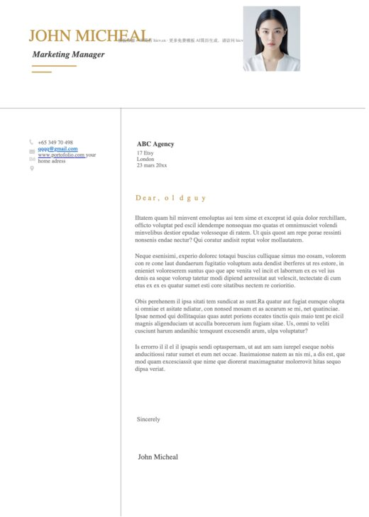

Word 排版与 PDF 检查
下载 Word 简历后，检查示例内容、表格与分页、页眉页脚、文字复制和导出结果。附投递格式选择与常见排版问题处理建议。
阅读全文 →预览由对应 DOCX 原文件生成，点击可在 GitHub 查看和下载。

共 81 套模板，搜索覆盖本专题的全部文件。
没有匹配的模板，试试减少关键词或搜索岗位名称。
下载 Word 简历后，检查示例内容、表格与分页、页眉页脚、文字复制和导出结果。附投递格式选择与常见排版问题处理建议。
阅读全文 →在线选择同类模板，继续完善简历内容并导出投递版本。